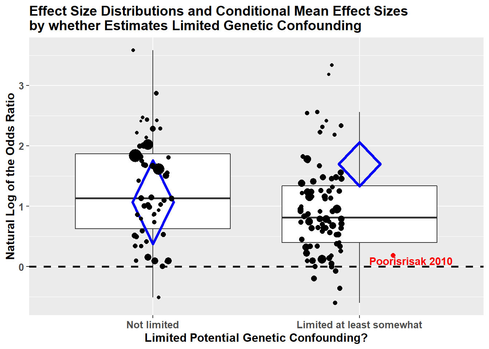
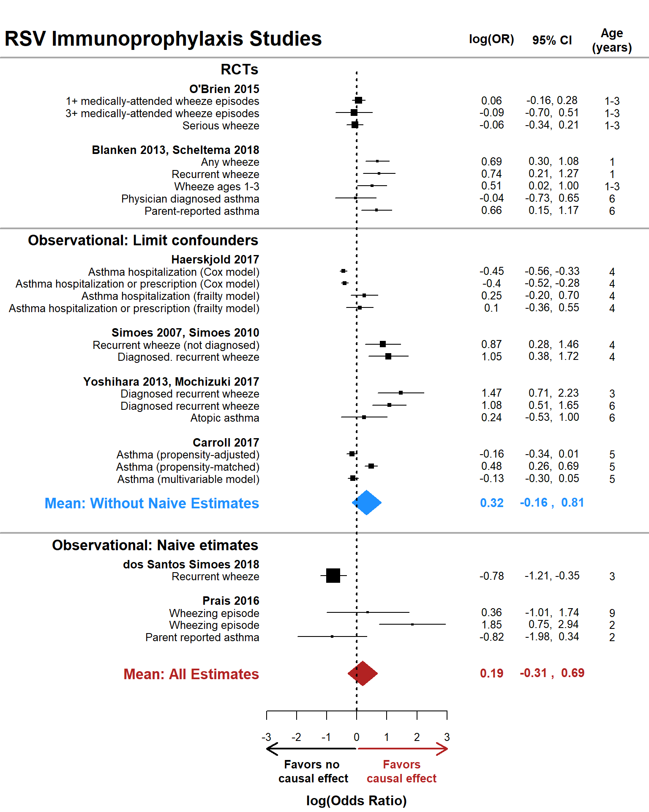

RSV Exposure studies
In this section, we evaluate whether there is evidence that confirmed RSV LRTI is positively associated with subsequent wheezing illness in observational studies and whether effect modifiers representing potential non-causal explanations for this association account for heterogeneity in the effect size estimates. There are 36 RSV Exposure studies providing 134 estimates for the primary analyses. Note: One of the two RSV Immunoprophylaxis RCTs provided an estimate of the direct association between RSV LRTI and subsequent wheezing illness, and therefore contributed one estimate to the RSV LRTI Exposure analyses.
Primary (a priori) model
The a priori model for the RSV Exposure studies was as follows:
\(y^{ij} = \gamma_{00} + \gamma_{10} x_{1}^{ij} + \gamma_{20} x_{2}^{ij} + \gamma_{30} x_{3}^{ij} + \gamma_{40} x_{4}^{ij} + \gamma_{50} x_{5}^{ij} + \gamma_{01} w_{1}^{j} + \gamma_{02} w_{2}^{j} + \gamma_{60} (x_{1}^{ij}\times x_{2}^{ij}) + \gamma_{11} (x_{1}^{ij}\times w_{2}^{j}) + e^{ij} + u^j\)
where yij = loge(OR) for effect size estimate i within study j; \(\gamma\)00 = conditional mean of the distribution of population effect sizes; \(\gamma\)10 …\(\gamma\)60 = regression parameters for covariates (xij) whose values vary within studies; \(\gamma\)01, \(\gamma\)02 = regression parameters for covariates (wj) whose values are constant within studies; \(\gamma\)11 = regression parameter for a cross-level interaction; eij = within-study sampling error; uj = between-study deviations from the population average effect size. The model covariates (effect modifiers) are defined as follows:
- x1ij = study design: 0=exposure group membership determined by RSV LRTI medical event; 1= exposure group membership determined by viral surveillance
- x2ij = age at outcome ascertainment: 0=preschool years (mean/median age < 5); 1=primary school years (mean/median age \(\geq\) 5); 2=adolescence/adulthood (mean/median age \(\geq\) 13)
- x3ij = genetic confounding: 0=no clear attempt to limit potential genetic confounding; 1=confounding limited at least somewhat
- x4ij = co-infection confounding: 0=no attempt to limit potential confounding due to co-infections at time of RSV+ LRTI ascertainment; 1= confounding limited at least somewhat
- x5ij = neonatal health confounding: 0=no attempt to limit potential confounding due to infant neonatal health; 1= confounding limitd at least somewhat
- w1j = participant risk: 0=study included children regardless of risk status; 1=study included only children at risk for asthma beyond having an RSV LRTI;
- w2j = exposure ascertainment period: 0=study exposure ascertainment extends beyond 12 months of age; 1= exposure ascertainment entirely within the first 12 months of life.
- eij = within-study sampling error;
- uj = between-study deviations from the population average effect size
Create a data frame (whorsvexp) with only RSV+ Exposure studies
whorsvexp <- subset( whoprimary1, rsvexp == 'RSV Exposure Studies' )
levels( whorsvexp$surveil ) <- c( 'RSV+ Medical Event','RSV+ Surveillance' )
levels( whorsvexp$exp012) <- c( 'Exposure period 0-12 months','Exposure period beyond 12 months')
Prior to conducting our Robust Variance Estimation (RVE) meta-regression, it is critical to evaluate the distributions of the potential effect modifiers (covariates in the above equation). Our RVE models calculate degrees of freeedom (df) using Satterthwaite approximation. Estimates with df < 4 should not be trusted (Tipton, 2015). Imbalance and sparse cells in the covariates could be a cause of insufficient df.
There is notable imbalance in the variables coding age category at outcome ascertainment (i.e., relatively few estimates measured in Adolescence/Adulthood) and minimization of confouding due to co-infection (i.e., few studies minimized this potential confounder). We will run the a priori model as is and note whether the df indicate a problem.
( toutagecat2 <- with( whorsvexp, table( outagecat2f ) ) )
## outagecat2f
## Adolesc/Adult Preschool School Age
## 16 71 47
( tminanycoinf <- with( whorsvexp, table( minanycoinff ) ) )
## minanycoinff
## Minimized at least somewhat Not minimized
## 22 112
par( mfrow = c(1,1))
barplot( toutagecat2, main = 'Age Category at Outcome Measurement' )
barplot( tminanycoinf, main = 'Any Evidence Co-Infection Confounding Reduced' )
Model 1.0: Prior to running the a priori model, we first run a model with no effect modifiers to calculate the unconditional weighted mean logeOR.
model1.0 <- robu( logor ~ 1, data = whorsvexp, studynum = studyid, var.eff.size = se_logor^2, rho = .8, small = T )
print( model1.0 )
## RVE: Correlated Effects Model with Small-Sample Corrections
##
## Model: logor ~ 1
##
## Number of studies = 36
## Number of outcomes = 134 (min = 1 , mean = 3.72 , median = 3 , max = 12 )
## Rho = 0.8
## I.sq = 86.48915
## Tau.sq = 0.3939956
##
## Estimate StdErr t-value dfs P(|t|>) 95% CI.L 95% CI.U Sig
## 1 X.Intercept. 1.19 0.109 10.9 30.5 0.00000000000472 0.969 1.41 ***
## ---
## Signif. codes: < .01 *** < .05 ** < .10 *
## ---
## Note: If df < 4, do not trust the results
To aid in interpretation, we exponentiate the logeOR estimate to transform the estimate to an odds ratio.
( model1.0.df <- data.frame( OddsRatioEstimate=round( exp( model1.0$reg_table$b.r ), digits = 2 ),
LCI=round( exp( model1.0$reg_table$CI.L ), digits = 2 ),
UCI=round( exp( model1.0$reg_table$CI.U ), digits = 2 ) ) )
## OddsRatioEstimate LCI UCI
## 1 3.29 2.63 4.12
In the unconditional model, RSV LRTI exposure is associated with a 3.29-fold increase in odds of subsequent wheezing illness (95% CI: 2.63, 4.12).
Model 1.1: We run the a priori model for RSV LRTI Exposure studies using the robumeta package in R. We use a simple working model of the within-study correlation matrix (set all within-study correlations to \(\rho\) = 0.80) in order to get optimally efficient inverse variance weights. We identify the studyid variable as the clustering variable and use small-sample-size corrections (Tipton, 2015).
model1.1 <- robu( logor ~ surveil*outagecat2f + surveil*exp012 + minanygen + minanycoinf + minanyneo + participantrisk, data = whorsvexp, studynum = studyid, var.eff.size = se_logor^2, rho = .8, small = T )
print( model1.1 )
## RVE: Correlated Effects Model with Small-Sample Corrections
##
## Model: logor ~ surveil * outagecat2f + surveil * exp012 + minanygen + minanycoinf + minanyneo + participantrisk
##
## Number of studies = 36
## Number of outcomes = 134 (min = 1 , mean = 3.72 , median = 3 , max = 12 )
## Rho = 0.8
## I.sq = 65.63893
## Tau.sq = 0.26251
##
## Estimate StdErr t-value dfs P(|t|>) 95% CI.L 95% CI.U Sig
## 1 X.Intercept. 2.5143 0.641 3.921 1.85 0.06746 -0.479 5.5071 *
## 2 surveil -1.4843 0.718 -2.066 4.87 0.09515 -3.345 0.3768 *
## 3 outagecat2fPreschool -0.7885 0.648 -1.217 1.91 0.35253 -3.705 2.1275
## 4 outagecat2fSchool.Age -1.1546 0.662 -1.745 1.94 0.22674 -4.083 1.7739
## 5 exp012 -0.5694 0.161 -3.531 8.13 0.00752 -0.940 -0.1986 ***
## 6 minanygen -0.5602 0.195 -2.868 11.90 0.01426 -0.986 -0.1341 **
## 7 minanycoinf 0.0727 0.320 0.227 4.59 0.82983 -0.771 0.9165
## 8 minanyneo 0.2586 0.187 1.380 13.44 0.19024 -0.145 0.6623
## 9 participantrisk -0.3438 0.138 -2.487 12.06 0.02848 -0.645 -0.0428 **
## 10 surveil.outagecat2fPreschool 1.3679 0.739 1.851 5.73 0.11592 -0.461 3.1969
## 11 surveil.outagecat2fSchool.Age 1.5214 0.683 2.226 3.27 0.10490 -0.554 3.5966
## 12 surveil.exp012 0.2723 0.317 0.860 5.31 0.42688 -0.528 1.0721
## ---
## Signif. codes: < .01 *** < .05 ** < .10 *
## ---
## Note: If df < 4, do not trust the results
The df for the estimates of the effect modifier coding age category at outcome ascertainment (outagecat2f) are too small to be trusted (df=1.91 & 1.94). This may be due to the fact that there is high imbalance across the levels of this factor, with few estimates measuring effects in adolescence/adulthood.
Model 1.2: We rerun Model 1.1 after collapsing the school age and adolescence/adulthood categories with the variable preschool. This effect modifier now tests whether effect sizes are larger among estimates measured outside of the preschool years: preschool vs. schoolage/adolescence/adulthood. This may fix the df problem. Additionally, we dropped the two interaction terms as there was no evidence that they were significant and they had relatively small df.
model1.2 <- robu( logor ~ surveil + preschool + surveil + exp012 + minanygen + minanycoinf + minanyneo + participantrisk, data = whorsvexp, studynum = studyid, var.eff.size = se_logor^2, rho = .8, small = T )
print( model1.2 )
## RVE: Correlated Effects Model with Small-Sample Corrections
##
## Model: logor ~ surveil + preschool + surveil + exp012 + minanygen + minanycoinf + minanyneo + participantrisk
##
## Number of studies = 36
## Number of outcomes = 134 (min = 1 , mean = 3.72 , median = 3 , max = 12 )
## Rho = 0.8
## I.sq = 65.29178
## Tau.sq = 0.2562418
##
## Estimate StdErr t-value dfs P(|t|>) 95% CI.L 95% CI.U Sig
## 1 X.Intercept. 1.4492 0.254 5.7116 9.33 0.000254 0.878 2.0201 ***
## 2 surveil -0.0174 0.213 -0.0816 9.10 0.936752 -0.499 0.4639
## 3 preschool 0.2478 0.210 1.1803 18.69 0.252669 -0.192 0.6878
## 4 exp012 -0.4043 0.175 -2.3051 13.30 0.037883 -0.782 -0.0263 **
## 5 minanygen -0.5553 0.212 -2.6169 12.70 0.021646 -1.015 -0.0958 **
## 6 minanycoinf 0.0854 0.293 0.2914 4.60 0.783406 -0.688 0.8584
## 7 minanyneo 0.2467 0.204 1.2084 12.23 0.249741 -0.197 0.6905
## 8 participantrisk -0.3847 0.154 -2.5015 12.55 0.027083 -0.718 -0.0512 **
## ---
## Signif. codes: < .01 *** < .05 ** < .10 *
## ---
## Note: If df < 4, do not trust the results
In both versions of the model (Model 1.1 and Model 1.2), the full confidence interval for the intercept—representing the weighted mean log odds ratio when all effect modifiers are set to the reference category—is positive, suggesting a positive association between RSV LRTI exposure and subsequent wheezing illness. We can convert the intercept estimate to the OR scale by exponentiating it:
model1.2.est <- round( exp( c(model1.2$reg_table$b.r[1]) ), digits = 2 )
model1.2.lci <- round( exp( c(model1.2$reg_table$CI.L[1]) ), digits = 2 )
model1.2.uci <- round( exp( c(model1.2$reg_table$CI.U[1]) ), digits = 2 )
## Estimates on the OR scale
( model1.2.table <- data.frame(parameter=model1.2$reg_table$labels[1], ConditionalOddsRatio=model1.2.est[1], LCI=model1.2.lci[1], UCI=model1.2.uci[1] ) )
## parameter ConditionalOddsRatio LCI UCI
## 1 X.Intercept. 4.26 2.41 7.54
The conditional weighted mean OR = 4.26 (95% CI: 2.41, 7.54) when holding all effect modifiers at their reference levels.
Effect size estimates were smaller among studies minimizing genetic confounding. This is consistent with the hypothesis that RSV LRTI exposure is at least partly a marker of genetic susceptibility rather than a purely causal factor. There was no evidence of effect modification by whether estimates were based on analyses limiting the influence non-RSV co-infections or neonatal health markers. Although these effect modifiers did not represent primary hypotheses, estimates from studies using a targeted enrollment strategy (i.e., enrolling only those with a known risk factor for wheezing illness other than RSV LRTI exposure: participantrisk) and those in which the entire exposure ascertainment period was contained in the first 12 months of life (exp012) yielded smaller effect sizes.
Model 1.3: To gauge how much the expected weighted mean effect size drops when limiting genetic confounding, we reran Model 1.2 changing the reference level of the miananygen variable so that limiting potential genetic confounding at least somewhat was the reference level and not limiting genetic confounding was the comparison level. The intercept in this model represents the condition weighted mean effect size estimate when studies minimized genetic confounding (adjusting for all other effect modifiers).
model1.3 <- robu( logor ~ surveil + preschool + surveil + exp012 + minanygenrev + minanycoinf + minanyneo + participantrisk, data = whorsvexp, studynum = studyid, var.eff.size = se_logor^2, rho = .8, small = T )
print( model1.3 )
## RVE: Correlated Effects Model with Small-Sample Corrections
##
## Model: logor ~ surveil + preschool + surveil + exp012 + minanygenrev + minanycoinf + minanyneo + participantrisk
##
## Number of studies = 36
## Number of outcomes = 134 (min = 1 , mean = 3.72 , median = 3 , max = 12 )
## Rho = 0.8
## I.sq = 65.29178
## Tau.sq = 0.2562418
##
## Estimate StdErr t-value dfs P(|t|>) 95% CI.L 95% CI.U Sig
## 1 X.Intercept. 0.8939 0.291 3.0673 9.09 0.0133 0.2357 1.5522 **
## 2 surveil -0.0174 0.213 -0.0816 9.10 0.9368 -0.4987 0.4639
## 3 preschool 0.2478 0.210 1.1803 18.69 0.2527 -0.1921 0.6878
## 4 exp012 -0.4043 0.175 -2.3051 13.30 0.0379 -0.7824 -0.0263 **
## 5 minanygenrev 0.5553 0.212 2.6169 12.70 0.0216 0.0958 1.0148 **
## 6 minanycoinf 0.0854 0.293 0.2914 4.60 0.7834 -0.6877 0.8584
## 7 minanyneo 0.2467 0.204 1.2084 12.23 0.2497 -0.1972 0.6905
## 8 participantrisk -0.3847 0.154 -2.5015 12.55 0.0271 -0.7182 -0.0512 **
## ---
## Signif. codes: < .01 *** < .05 ** < .10 *
## ---
## Note: If df < 4, do not trust the results
model1.3.est <- round( exp( c(model1.3$reg_table$b.r[1]) ), digits = 2 )
model1.3.lci <- round( exp( c(model1.3$reg_table$CI.L[1]) ), digits = 2 )
model1.3.uci <- round( exp( c(model1.3$reg_table$CI.U[1]) ), digits = 2 )
## Estimates on the OR scale
( model1.3.table <- data.frame(parameter=model1.3$reg_table$labels[1], ConditionalOddsRatio=model1.3.est[1], LCI=model1.3.lci[1], UCI=model1.3.uci[1] ) )
## parameter ConditionalOddsRatio LCI UCI
## 1 X.Intercept. 2.44 1.27 4.72
The intercept in Model 1.3 is smaller when it represents the weighted mean effect size among studies limiting genetic confounding compared to Model 1.2 when it represents studies not limiting genetic confounding. The point estimate for the intercept drops from aOR=4.26 in Model 1.2 to aOR=2.44 in Model 1.3. The intercept is positive and signifcant in both models, indicating a positive conditional mean effect between RSV LRTI and subsequent wheezing illness. But we expect a substantial drop in the OR for the effect of RSV LRTI on subsequent wheezing illness when studies do something to limit genetic confounding.
Below we visualize the modifying effect of limiting genetic confounding by plotting boxplots for the observared effect size estimates by whether or not the estimates limited genetic confounding. We superimpose the point estimates to show the observed distributions with the point size proportional to the estimate’s inverse variance – i.e., more precise estimates have larger points. Additionally, we superimpose red diamonds, the center of which represents the estimated conditional mean effect size estimates based on models 1.2 and 1.3. The bottoms and tops of the diamonds represent, respectively, the lower and upper bound 95% confidence intervals. Finally, we highlight in red the estimate from the study by Poorisrisak et al. 2010 because this was the only estimate that fully eliminated genetic confounding by comparing monozygotic twins who were discordant for RSV LRTI hospitalization. This point estimate was smaller than over 80% of the estimates that only partly limited genetic confounding. As the sample size was relatively small in this study, there was considerable uncertainty in this estimate with plausible odds ratios ranging from RSV LRTI hospitalization being protective (lower 95% CI = 0.36) to highly damaging (upper 95% CI = 4.00).
whorsvexp$minanygenf <- relevel( whorsvexp$minanygenf, ref='Not minimized')
mingenfull <- with( whorsvexp, ifelse( studyname == 'Poorisrisak 2010', 1, 0 ) )#
mingenfullf <- factor( mingenfull, levels=0:1, labels=c('Not fully minimized','Fully minimized' ) )
x1 <- c(1,.9,1,1.1)
y1 <- c(model1.2$reg_table$CI.L[1],model1.2$reg_table$b.r[1], model1.2$reg_table$CI.U[1],model1.2$reg_table$b.r[1])
df1 <- data.frame(x1,y1)
x2 <- c(2,1.9,2,2.1)
y2 <- c(model1.3$reg_table$CI.L[1],model1.3$reg_table$b.r[1], model1.3$reg_table$CI.U[1],model1.3$reg_table$b.r[1])
df2 <- data.frame(x2,y2)
levels( whorsvexp$minanygenf ) <- c( 'Not limited','Limited at least somewhat' )
( box2 <- ggplot( whorsvexp, aes( x=minanygenf, y=logor ) ) +
geom_boxplot( outlier.shape = NA ) +
geom_polygon(data=df1, aes(x=x1, y=y1 ), fill=NA, color='red', size=1.25) +
geom_polygon(data=df2, aes(x=x2, y=y2 ), fill=NA, color='red', size=1.25) +
geom_point( aes(size = whorsvexp$w, color = mingenfullf ), position = position_jitterdodge(),
show.legend = F ) +
scale_color_manual(values=c('Not fully minimized'='black', 'Fully minimized'='red')) +
ggtitle( 'Effect Size Distributions and Conditional Mean Effect Sizes\nby whether Estimates Limited Genetic Confounding') +
ylab( 'Natural Log of the Odds Ratio' ) +
xlab( 'Limited Potential Genetic Confounding?' ) +
theme( plot.title = element_text( size=14, face='bold' ),
axis.title.x = element_text( size=12, face='bold' ),
axis.title.y = element_text( size=12, face='bold' ),
axis.text.x = element_text( size=10, face='bold'),
axis.text.y = element_text( size=10, face = 'bold')) +
theme(legend.position = "none") +
annotate("text", x = 2.25, y =whorsvexp[ whorsvexp$studyname=='Poorisrisak 2010','logor']*.5, label = "Poorisrisak 2010", color='red', fontface='bold') +
geom_hline(yintercept = 0, linetype = 'dashed', size = 1, colour = 2 )
)

Sensitivity Analyses for RSV+ Exposure Studies
Model 1.4: We run a sensitivity analysis for Model 1.2 using different values for the presumed common correlation among effect sizes from the same study (\(\rho\)). We’ll rerun the model 5 times with the value of \(\rho\) taking on values ranging from 0.00 to 1.00 (full range of possible correlaitons) at an interval of 0.20. Then we can see if the model estimates and standard errors are sensitive to our choice of value for \(\rho\).
sensitivity( model1.2 )
## RVE: Correlated Effects Model with Small-Sample Corrections
## Model: logor ~ surveil + preschool + surveil + exp012 + minanygen + minanycoinf + minanyneo + participantrisk
##
## Sensitivity Analysis
##
## Rho = 0 Rho = 0.2 Rho = 0.4 Rho = 0.6 Rho = 0.8 Rho = 1
## X.Intercept. Coefficient 1.4445 1.4457 1.4469 1.4480 1.4492 1.4503
## Std. Error 0.2518 0.2523 0.2528 0.2532 0.2537 0.2542
## surveil Coefficient -0.0137 -0.0147 -0.0156 -0.0165 -0.0174 -0.0183
## Std. Error 0.2124 0.2126 0.2127 0.2129 0.2131 0.2133
## preschool Coefficient 0.2496 0.2491 0.2487 0.2483 0.2478 0.2474
## Std. Error 0.2088 0.2091 0.2094 0.2097 0.2100 0.2103
## exp012 Coefficient -0.4062 -0.4057 -0.4052 -0.4048 -0.4043 -0.4039
## Std. Error 0.1740 0.1743 0.1747 0.1750 0.1754 0.1757
## minanygen Coefficient -0.5577 -0.5571 -0.5565 -0.5559 -0.5553 -0.5547
## Std. Error 0.2101 0.2106 0.2111 0.2117 0.2122 0.2127
## minanycoinf Coefficient 0.0817 0.0827 0.0836 0.0845 0.0854 0.0862
## Std. Error 0.2925 0.2926 0.2927 0.2928 0.2929 0.2930
## minanyneo Coefficient 0.2502 0.2493 0.2484 0.2475 0.2467 0.2458
## Std. Error 0.2027 0.2031 0.2034 0.2038 0.2041 0.2045
## participantrisk Coefficient -0.3821 -0.3828 -0.3834 -0.3841 -0.3847 -0.3854
## Std. Error 0.1531 0.1533 0.1534 0.1536 0.1538 0.1540
## Tau.sq Estimate 0.2415 0.2452 0.2489 0.2526 0.2562 0.2599
The coefficient and standard error estimates are highly similar no matter what value of \(\rho\) is selected. Thus, the value of \(\rho\) selected seems inconsequential.
Model 1.5: Next, we run a model dropping all estimates based on analyses that did not limit any potential confouders (naive estimates), either through the study design or statistical analyses (i.e., naive estimates). Thus, we evaluate whether the estimates in Model 2 are driven by naive estimates, which we expect to be upwardly biased.
model1.5 <- robu( logor ~ surveil + preschool + surveil + exp012 + minanygen + minanycoinf + minanyneo + participantrisk,
data = whorsvexp[ whorsvexp$nocohortlab5!='No evidence of limiting confounders', ],
studynum = studyid, var.eff.size = se_logor^2, rho = .8, small = T )
print( model1.5 )
## RVE: Correlated Effects Model with Small-Sample Corrections
##
## Model: logor ~ surveil + preschool + surveil + exp012 + minanygen + minanycoinf + minanyneo + participantrisk
##
## Number of studies = 28
## Number of outcomes = 111 (min = 1 , mean = 3.96 , median = 3 , max = 12 )
## Rho = 0.8
## I.sq = 62.26668
## Tau.sq = 0.2400733
##
## Estimate StdErr t-value dfs P(|t|>) 95% CI.L 95% CI.U Sig
## 1 X.Intercept. 1.623 0.272 5.972 7.88 0.000353 0.995 2.2516 ***
## 2 surveil -0.210 0.285 -0.738 7.13 0.483969 -0.882 0.4613
## 3 preschool 0.246 0.252 0.975 13.21 0.347050 -0.298 0.7906
## 4 exp012 -0.348 0.274 -1.272 9.00 0.235252 -0.968 0.2712
## 5 minanygen -0.616 0.244 -2.522 12.70 0.025867 -1.144 -0.0871 **
## 6 minanycoinf 0.104 0.435 0.240 4.03 0.821848 -1.098 1.3068
## 7 minanyneo 0.220 0.239 0.920 11.99 0.375730 -0.302 0.7421
## 8 participantrisk -0.545 0.208 -2.613 9.77 0.026380 -1.011 -0.0787 **
## ---
## Signif. codes: < .01 *** < .05 ** < .10 *
## ---
## Note: If df < 4, do not trust the results
The negative modifying effect of limiting genetic confounding was robust when removing naive estimates and the intercept (conditional weighted mean logeOR) remained positive and significant. Thus, removing naive estimates did not alter our conclusions.
Leave-One-Out Analyses: Finally, we reran model 1.2 36 times, iteratively removing one study (and all of its estimates) at a time to determine whether any one study had enough leverage to alter our main conclusions. The figure below shows estimates on the loge(OR) scale for the intercept (panel a), the modifying influence of limiting non-RSV co-infections (panel b), the modifying influence of limiting genetic confounding (panel c), and modifying effect of limiting neonatal health differences (panel d). The x-axis shows the estimates on the logeOR scale when each individual study is eliminated from the model 1.2 (y-axis). The vertical red dotted line at 0 represents no effect.
levels( looplotdf$parameter) <- c( 'a. Conditional Mean (Intercept)',
'b. Limited Influence non-RSV Co-Infections',
'c. Limited Influence of Genetic Confounding',
'd. Limited Influence of Neonatal Health')
looplot_labeller <- function(variable,value){
return(looplotlabels[value])
}
( looplot <- ggplot( looplotdf ) +
geom_segment( aes( x=cilow, y=studynames, xend=ciup, yend=studynames ) ) +
geom_point( aes( x=est, y=studynames) ) +
geom_vline( xintercept=0, color='red', linetype='dashed', size=1.5) +
facet_wrap( ~parameter, scales = 'free_x' ) +
expand_limits(x = 0) +
ggtitle('Leave-One-Out Analysis: RSV LRTI Exposure Studies') +
xlab( 'Estimate of Modifying Effect: log(Odds Ratio)') +
ylab('Study Left Out of the Analysis') +
theme( plot.title = element_text( size=16, face='bold' ),
axis.title.x = element_text( size=14, face='bold' ),
axis.title.y = element_text( size=12, face='bold' ),
axis.text.x = element_text( size=10, face='bold'),
axis.text.y = element_text( size=10, face = 'bold'),
strip.text.x = element_text(size=14, face='bold') )
)
This figure shows that, for all four primary parameters of interest, the removal of any one study (and all of its estimates) does not alter whether the 95% confidence interval contains the null value (logeOR=0). No individual study had sufficient leverage to alter our primary conclusion. In sum, the effects were robust and not driven by any one study.
Subgroup analyses for RSV+ Exposure studies
Model 1.6: We run a new model including only estimates evaluating the association between RSV LRTI and subsequent “asthma” outcomes measured at age \(\ge\) 6 years. Estimates were included if the study authors described the corresponding outcome variable as “asthma” as determined by medical records, physician evaluation, and/or a pre-specified study criteria (e.g., three or more wheezing episodes in the past year, use of asthma medications, etc.). It is plausible that findings from the RSV Exposure models are driven by transient wheezing episodes early in life. This model focuses only on outcomes present at an age when early life transient wheezing epiosdes have typically resolved. Additionally, all estimates included in this model correspond to outcomes that were measured long after the washout period (30 days) between the exposure and outcome measurements. Thus, we can be highly confident that all wheezing illness outcomes included in this analysis were not merely symptom manifestations of the index RSV LRTI illness (i.e., the exposure and outcome are clearly separate).
First, we create a new dataframe (whorsvesp_asth6) including only estimate measuring asthma at age \(\ge\) 6 years by selecting the subset of studies with the value of 1 for the variable asthma6:
whorsvexp_asth6 <- subset( whorsvexp, dxoutcome6 == 1 )
Next, we run Model 1.6. Because there are only 15 studies and 42 effect size estimates, it’s not feasible to run a model as complex as Model 1.2. Therefore, we first run the model without any effect modifiers.
model1.6 <- robu( logor ~ 1,
data = whorsvexp_asth6,
studynum = studyid, var.eff.size = se_logor^2, rho = .8, small = T )
print( model1.6 )
## RVE: Correlated Effects Model with Small-Sample Corrections
##
## Model: logor ~ 1
##
## Number of studies = 15
## Number of outcomes = 42 (min = 1 , mean = 2.8 , median = 2 , max = 11 )
## Rho = 0.8
## I.sq = 67.20755
## Tau.sq = 0.3332926
##
## Estimate StdErr t-value dfs P(|t|>) 95% CI.L 95% CI.U Sig
## 1 X.Intercept. 0.888 0.186 4.76 12.9 0.000378 0.485 1.29 ***
## ---
## Signif. codes: < .01 *** < .05 ** < .10 *
## ---
## Note: If df < 4, do not trust the results
model1.6.est <- round( exp( c(model1.6$reg_table$b.r[1]) ), digits = 2 )
model1.6.lci <- round( exp( c(model1.6$reg_table$CI.L[1]) ), digits = 2 )
model1.6.uci <- round( exp( c(model1.6$reg_table$CI.U[1]) ), digits = 2 )
## Estimates on the OR scale
( model1.6.table <- data.frame(parameter=model1.6$reg_table$labels[1], ConditionalOddsRatio=model1.6.est[1], LCI=model1.6.lci[1], UCI=model1.6.uci[1] ) )
## parameter ConditionalOddsRatio LCI UCI
## 1 X.Intercept. 2.43 1.62 3.63
The weighted mean effect size is positive and significant: OR = 2.43, 95% CI [1.62, 3.63]. Thus, the effect of RSV LRTI on subsequent wheezing illness does not appear to be driven by estimates evaluating effects of RSV LRTI on transient wheezing episodes in early life. As shown below, there is no evidence that whether estimates were based on analyses limiting genetic confounding, co-infections, or neonatal health markers did not modify the effect. As the sample size was much smaller than in model 1.2, there was less power and we entered only one effect modifier at a time.
Model 1.6a: Rerun Model 1.6 including the variable coding whether or not the estimates were based on analyses limiting genetic confounding (minanygenf) as an effect modifier.
( model1.6a <- robu( logor ~ minanygenf,
data = whorsvexp_asth6,
studynum = studyid, var.eff.size = se_logor^2, rho = .8, small = T ) )
## RVE: Correlated Effects Model with Small-Sample Corrections
##
## Model: logor ~ minanygenf
##
## Number of studies = 15
## Number of outcomes = 42 (min = 1 , mean = 2.8 , median = 2 , max = 11 )
## Rho = 0.8
## I.sq = 66.61415
## Tau.sq = 0.3299089
##
## Estimate StdErr t-value dfs P(|t|>) 95% CI.L 95% CI.U Sig
## 1 X.Intercept. 1.089 0.361 3.016 4.07 0.0385 0.0931 2.086 **
## 2 minanygenfLimited.at.least.somewhat -0.284 0.414 -0.687 7.33 0.5133 -1.2543 0.686
## ---
## Signif. codes: < .01 *** < .05 ** < .10 *
## ---
## Note: If df < 4, do not trust the results
Model 1.6b: Rerun Model 1.6 including the variable coding whether or not the estimates were based on analyses limiting non-RSV co-infections (minanycoinf) as an effect modifier.
( model1.6b <- robu( logor ~ minanycoinf,
data = whorsvexp_asth6,
studynum = studyid, var.eff.size = se_logor^2, rho = .8, small = T ) )
## RVE: Correlated Effects Model with Small-Sample Corrections
##
## Model: logor ~ minanycoinf
##
## Number of studies = 15
## Number of outcomes = 42 (min = 1 , mean = 2.8 , median = 2 , max = 11 )
## Rho = 0.8
## I.sq = 68.51266
## Tau.sq = 0.350283
##
## Estimate StdErr t-value dfs P(|t|>) 95% CI.L 95% CI.U Sig
## 1 X.Intercept. 0.89102 0.206 4.3241 11.55 0.00108 0.44 1.34 ***
## 2 minanycoinf -0.00397 0.387 -0.0102 2.13 0.99270 -1.58 1.57
## ---
## Signif. codes: < .01 *** < .05 ** < .10 *
## ---
## Note: If df < 4, do not trust the results
Model 1.6c: Rerun Model 1.6 including the variable coding whether or not the estimates were based on analyses limiting differences in neonatal health markers (minanyneo) as an effect modifier.
( model1.6c <- robu( logor ~ minanyneo,
data = whorsvexp_asth6,
studynum = studyid, var.eff.size = se_logor^2, rho = .8, small = T ) )
## RVE: Correlated Effects Model with Small-Sample Corrections
##
## Model: logor ~ minanyneo
##
## Number of studies = 15
## Number of outcomes = 42 (min = 1 , mean = 2.8 , median = 2 , max = 11 )
## Rho = 0.8
## I.sq = 65.88488
## Tau.sq = 0.3358321
##
## Estimate StdErr t-value dfs P(|t|>) 95% CI.L 95% CI.U Sig
## 1 X.Intercept. 0.847 0.242 3.502 9.14 0.00654 0.301 1.39 ***
## 2 minanyneo 0.151 0.342 0.441 5.12 0.67699 -0.722 1.02
## ---
## Signif. codes: < .01 *** < .05 ** < .10 *
## ---
## Note: If df < 4, do not trust the results
Model 1.7: We also evaluated whether the association between RSV LRTI and subsequent wheezing illness was significant among the subset of estimates from samples in which all children had a family history of asthma or atopy.
whoatopyexp <- subset( whoatopy, rsvexp == 'RSV Exposure Studies' )
( model1.7 <- robu( logor ~ 1,
data = whoatopyexp,
studynum = studyid, var.eff.size = se_logor^2, rho = .8, small = T ) )
## RVE: Correlated Effects Model with Small-Sample Corrections
##
## Model: logor ~ 1
##
## Number of studies = 6
## Number of outcomes = 40 (min = 1 , mean = 6.67 , median = 5 , max = 14 )
## Rho = 0.8
## I.sq = 55.58374
## Tau.sq = 0.2468433
##
## Estimate StdErr t-value dfs P(|t|>) 95% CI.L 95% CI.U Sig
## 1 X.Intercept. 0.542 0.133 4.07 4.04 0.015 0.173 0.91 **
## ---
## Signif. codes: < .01 *** < .05 ** < .10 *
## ---
## Note: If df < 4, do not trust the results
model1.7.est <- round( exp( c(model1.7$reg_table$b.r[1]) ), digits = 2 )
model1.7.lci <- round( exp( c(model1.7$reg_table$CI.L[1]) ), digits = 2 )
model1.7.uci <- round( exp( c(model1.7$reg_table$CI.U[1]) ), digits = 2 )
## Estimates on the OR scale
( model1.7.table <- data.frame(parameter=model1.7$reg_table$labels[1], ConditionalOddsRatio=model1.7.est[1], LCI=model1.7.lci[1], UCI=model1.7.uci[1] ) )
## parameter ConditionalOddsRatio LCI UCI
## 1 X.Intercept. 1.72 1.19 2.49
The weighted mean loge(OR) effect size is greater than 0 in these 7 studies (40 estimates), but notably smaller than in the primary analyses: OR = 1.72, 95% CI[1.19, 2.49]. This raises the possibility that RSV LRTI might have a smaller effect among children who have a high genetic loading for asthma/atopy, though our analyses could not test this explicitly. There were only 2 studies providing estimates from the specific subpopulation of children whose parents denied family history of asthma/atopy, precluding meaningful meta-analytic modeling.
We intended to conduct a subgroup analysis evaluating the mean effect size for the association between RSV LRTI and subsequent wheezing outcomes among children with early atopic sensitization (age \(\le\) 2), but there were insufficient data available.
RSV Prophylaxis studies
In this section, we evaluate whether there is evidence that high-risk infants receiving RSV immunoprophylaxis have lower risk of subsequent wheezing illness. There are 8 RSV Prophylaxis studies (2 RCTs and 6 non-randomized studies) providing 22 estimates for the primary analyses.
First, we create a data frame with only RSV+ Immunoprophylaxis Studies. There are 16 estimates from non-randomized prophylaxis studies and 7 from the two RCTs.
whoprophyl <- subset( whoprimary1, comptype == 'Prophylaxis vs No Prophylaxis' )
whoprophyl$rct <- factor( whoprophyl$rct, level=0:1, labels = c('Non-Randomized','RCT'))
table( whoprophyl$rct )
##
## Non-Randomized RCT
## 16 7
Model 2.1: We run a model evaluating the weighted mean average effect size across all RSV Prophylaxis studies. One effect modifier, coding whether the study used an RCT or a non-randomized study design, was included in the model.
print( model2.1 <- robu( logor ~ rct,
data = whoprophyl,
studynum = studyid, var.eff.size = se_logor^2, rho = .8, small = T ) )
## RVE: Correlated Effects Model with Small-Sample Corrections
##
## Model: logor ~ rct
##
## Number of studies = 8
## Number of outcomes = 23 (min = 1 , mean = 2.88 , median = 3 , max = 5 )
## Rho = 0.8
## I.sq = 87.72279
## Tau.sq = 0.3553704
##
## Estimate StdErr t-value dfs P(|t|>) 95% CI.L 95% CI.U Sig
## 1 X.Intercept. 0.1903 0.282 0.6756 4.76 0.531 -0.545 0.925
## 2 rctRCT 0.0207 0.407 0.0509 1.79 0.965 -1.949 1.990
## ---
## Signif. codes: < .01 *** < .05 ** < .10 *
## ---
## Note: If df < 4, do not trust the results
The number of df for the RCT parameter estimate is too small to be trustworthy. This is likely due to the small number of estimates provided by RCTs.
Model 2.2: We rerun Model 2.1 without including the effect modifier and get a single estimate for all prophylaxis studies.
print( model2.2 <- robu( logor2 ~ 1,
data = whoprophyl,
studynum = studyid, var.eff.size = se_logor^2, rho = .8, small = T ) )
## RVE: Correlated Effects Model with Small-Sample Corrections
##
## Model: logor2 ~ 1
##
## Number of studies = 8
## Number of outcomes = 23 (min = 1 , mean = 2.88 , median = 3 , max = 5 )
## Rho = 0.8
## I.sq = 86.27162
## Tau.sq = 0.2994445
##
## Estimate StdErr t-value dfs P(|t|>) 95% CI.L 95% CI.U Sig
## 1 X.Intercept. 0.19 0.211 0.902 6.71 0.398 -0.313 0.693
## ---
## Signif. codes: < .01 *** < .05 ** < .10 *
## ---
## Note: If df < 4, do not trust the results
model2.2.est <- round( exp( c(model2.2$reg_table$b.r[1]) ), digits = 2 )
model2.2.lci <- round( exp( c(model2.2$reg_table$CI.L[1]) ), digits = 2 )
model2.2.uci <- round( exp( c(model2.2$reg_table$CI.U[1]) ), digits = 2 )
## Estimates on the OR scale
( model2.2.table <- data.frame(parameter=model2.2$reg_table$labels[1], OddsRatio=model2.2.est[1], LCI=model2.2.lci[1], UCI=model2.2.uci[1] ) )
## parameter OddsRatio LCI UCI
## 1 X.Intercept. 1.21 0.73 2
The estimate is positive, loge(OR)=0.19 (OR=1.21), but the confidence interval easily overlaps 0, so we cannot be confident that those not receiving RSV prophylaxis (who presumably have greater exposure to RSV LRTI) are at any greater odds of having subsequent wheezing illness.
Model 2.3: One of the primary threats to inference in non-randomized prophylaxis trials is that those receiving RSV immunoprophylaxis have more severe health problems and are thus more likely to receive the intervention. This potential imbalance between RSV immunoprophylaxis exposure group and comparator group might result in a spurious positive association between RSV immunoprophylaxis and subsequent wheezing illness even if it is truly protective (i.e., confounding by indication). As a sensitivity analysis, we removed two studies (dos Santos Simoes et al. 2018 and Prais et al. 2016) in which there was no clear attempt to minmize confounding by indication and reran Model 2.2:
whoprophylsubset <- subset( whoprophyl, studyname != 'Prais 2016' & studyname != 'dos Santos Simoes 2018' )
print( model2.3 <- robu( logor ~ 1,
data = whoprophylsubset,
studynum = studyid, var.eff.size = se_logor^2, rho = .8, small = T ) )
## RVE: Correlated Effects Model with Small-Sample Corrections
##
## Model: logor ~ 1
##
## Number of studies = 6
## Number of outcomes = 19 (min = 2 , mean = 3.17 , median = 3 , max = 5 )
## Rho = 0.8
## I.sq = 84.33308
## Tau.sq = 0.2290366
##
## Estimate StdErr t-value dfs P(|t|>) 95% CI.L 95% CI.U Sig
## 1 X.Intercept. 0.323 0.191 1.69 4.89 0.154 -0.173 0.818
## ---
## Signif. codes: < .01 *** < .05 ** < .10 *
## ---
## Note: If df < 4, do not trust the results
model2.3.est <- round( exp( c(model2.3$reg_table$b.r[1]) ), digits = 2 )
model2.3.lci <- round( exp( c(model2.3$reg_table$CI.L[1]) ), digits = 2 )
model2.3.uci <- round( exp( c(model2.3$reg_table$CI.U[1]) ), digits = 2 )
## Estimates on the OR scale
( model2.3.table <- data.frame(parameter=model2.3$reg_table$labels[1], OddsRatio=model2.3.est[1], LCI=model2.3.lci[1], UCI=model2.3.uci[1] ) )
## parameter OddsRatio LCI UCI
## 1 X.Intercept. 1.38 0.84 2.27
The weighted mean effect size is larger when removing the two studies that did not reduce risk of confounding by indication, but the confidence interval still easily overlaps 0. Therefore, we cannot conclude with confidence that those receiving RSV immunoprophylaxis have lower odds of developing subsequent wheezing illness.
Below is a forest plot summarizing results of models 2.2 and 2.3, evaluating the effect of RSV immunoprophylaxis on wheezing illness. Black squares with lines through them represent individual effect size estimates and their 95% confidence intervals, with the size of the squares proportional to their weight in the analysis. The blue diamond represents the weighted mean effect size and 95% confidence interval for estimates from RCTs and observational studies clearly limiting confounders (i.e., the mean effect size without naive estimates). The red diamond represents the weighted mean effect including all studies, including those from observational studies that did not clearly limit potential confounders. The vertical dotted line represents a null effect size: logeOR = 0.
yaxis.or <- c(4:6,9,17:19,22:24,27:28,31:34,39:43,46:47)
yaxis.studylab <- c(7,10,20,25,29,35,44,48)
yaxis.studytype <- c(11,34,47)
yaxis.summary <- c(1,13)
yaxis.studytypelab <- c('Observational: Naive estimates',
'Observational: Limit confounders',
'RCTs')
yaxis.summarylab <- c('Mean OR: All Studies','Mean OR: No naive estimates')
#tiff( 'Fig4.tif', width = 8, units = 'in', height = 10, res = 300 )
par( mar= c(6.2,16,1,12), xpd=T, oma=c( 0,0,0,0 ) )
with( prophylplot1, plot( logor, yaxis.or, type = 'p', pch = 15,
xlim = c( -3, 3 ), ylim =c( 0, max(yaxis.or)*1.1),
bty = 'n', yaxt = 'n', ylab = '', cex = weight*.8,
xlab = '', cex.axis = .8 ) )
## Arrows indicating direction of effect
arrows( x0 = -0.05, x1 = -3, y0 = -5.2, y1 = -5.2, xpd=T, length = .15, lwd = 2, col = 1 )
arrows( x0 = 0.05, x1 = 3, y0 = -5.2, y1 = -5.2, xpd=T, length = .15, lwd = 2, col = 'firebrick' )
text( c(-1.5, 1.5), c(-7,-7), labels = c("Favors no\n causal effect","Favors\ncausal effect"), xpd=T,
cex = .85, col = c(1,'firebrick'), font = 2)
## x-axis label
text( labels="log(Odds Ratio)", font=2, cex=1, x = 0, y = -9.5, xpd = T )
## Confidence intervals for effect sizes
with( prophylplot1, segments( x0 = logor.cilow, x1=logor.ciup, y0=yaxis.or, y1=yaxis.or,
lty = 1, lwd=1.35, col = 1) )
## Labels for effect sizes and studies
with( prophylplot1, mtext( text = eslab, side = 2, outer = F, at = yaxis.or, las = 2, cex = .80 ) )
with( prophylplot1[ !duplicated(prophylplot1$studyname), ],
mtext( text = studyname, side = 2, outer = F, font = 2,
at = yaxis.studylab, las = 2, cex=.85, col = 1 ) )
#polygon( x=c(-3.53,0.207,3.95,0.207,-3.53), y=c(35.5,35,35.5,36,35.5))
## Mean effect size polygons
polygon( x=c(model2.2$reg_table$CI.L, model2.2$reg_table$b.r,
model2.2$reg_table$CI.U, model2.2$reg_table$b.r,
model2.2$reg_table$CI.L),
y=c(1,0,1,2,1),col='firebrick',border='firebrick')
mtext( 'Mean: All Estimates', side = 2, outer = F, font=2, at = 1,
col = 'firebrick', las=2, cex = 1.1 )
polygon( x=c(model2.3$reg_table$CI.L, model2.3$reg_table$b.r,
model2.3$reg_table$CI.U, model2.3$reg_table$b.r,
model2.3$reg_table$CI.L),
y=c(15,14,15,16,15),col='dodgerblue',border='dodgerblue')
mtext( 'Mean: Without Naive Estimates', side = 2, outer = F,
font = 2, at = 15, col = 'dodgerblue', las=2, cex=1.1)
## Subsection labels
text( labels = c( 'RCTs','Observational: Limit confounders','Observational: Naive etimates' ),
x = c( -3, -3, -3), y = c(49.5, 36.5, 11.5), font = 2, xpd = T, cex = 1.1, pos = 2,
col=1)
segments( x0 = c(-15,-15,-15), x1 = c(15,15,15), y0=c(50.5,37.5,12.5), col='dark gray', lwd = 2 )
## Zero effect guideline
with( prophylplot1, segments( x0 = 0, x1=0, y0=-2, y1=max(yaxis.or)*1.05, lty = 3, lwd=2, col = 1) )
## Text in right margin
with( prophylplot1, text( x=4.5, y = yaxis.or+.05, labels = logor.plot, las = 2, xpd = T, cex=.8 ) )
with( prophylplot1, text( x=6.5, y = yaxis.or, labels = logor.cif, las = 2, xpd = T, cex=.8 ) )
with( prophylplot1, text( x=8.5, y = yaxis.or, labels = ageoutcome, las = 2, xpd = T, cex=.8 ) )
with( prophylplot1, text( x=4.5, y = max(yaxis.or)+5, labels = 'log(OR)', las = 2, font = 2, cex=.9, xpd=T ) )
with( prophylplot1, text( x=6.5, y = max(yaxis.or)+5, labels = '95% CI', las = 2, font = 2, cex=.9, xpd=T ) )
with( prophylplot1, text( x=8.5, y = max(yaxis.or)+5, labels = 'Age\n(years)',
las = 2, font = 2, cex=.9, xpd=T ) )
with( prophylplot1, text( x=4.5, y = 1+.05, labels = '0.21', las = 2, font = 2, col = 'firebrick', cex = .9, xpd = T ) )
with( prophylplot1, text( x=6.5, y = 1, labels = '-0.31, 0.72', las = 2, font = 2, col = 'firebrick', cex = .9, xpd = T ) )
with( prophylplot1, text( x=4.5, y = 15+.055, labels = '0.34', las = 2, font = 2, col = 'dodgerblue', cex = .9, xpd = T ) )
with( prophylplot1, text( x=6.5, y = 15, labels = '-0.14, 0.83', las = 2, font = 2, col = 'dodgerblue', cex = .9, xpd = T ) )
## Main title
with( prophylplot1, text( x=-12, y = max(yaxis.or)+5, labels = 'RSV Immunoprophylaxis Studies', las = 2, font = 2,
col = 1, cex = 1.5, xpd = T, pos=4 ) )

#dev.off()
Model 2.4: Finally, we run a model including estimates from only the two immunoprophyalxis RCTs. As there were only two studies and seven estimates, we expect a large confidence interval around the weighted mean effect size estimate. The RCTs have a major advantage of essentially eliminating the threat of confounding by indication given that participant characteristics could not affect the likelihood of their receiving the intervention.
print( model2.4 <- robu( logor ~ 1,
data = whoprophyl[ whoprophyl$rct == 'RCT', ],
studynum = studyid, var.eff.size = se_logor^2, rho = .8, small = T ) )
## RVE: Correlated Effects Model with Small-Sample Corrections
##
## Model: logor ~ 1
##
## Number of studies = 2
## Number of outcomes = 7 (min = 2 , mean = 3.5 , median = 3.5 , max = 5 )
## Rho = 0.8
## I.sq = 70.16491
## Tau.sq = 0.1734609
##
## Estimate StdErr t-value dfs P(|t|>) 95% CI.L 95% CI.U Sig
## 1 X.Intercept. 0.207 0.294 0.703 1 0.61 -3.53 3.95
## ---
## Signif. codes: < .01 *** < .05 ** < .10 *
## ---
## Note: If df < 4, do not trust the results
model2.4.est <- round( exp( c(model2.4$reg_table$b.r[1]) ), digits = 2 )
model2.4.lci <- round( exp( c(model2.4$reg_table$CI.L[1]) ), digits = 2 )
model2.4.uci <- round( exp( c(model2.4$reg_table$CI.U[1]) ), digits = 2 )
## Estimates on the OR scale
( model2.4.table <- data.frame(parameter=model2.4$reg_table$labels[1], ConditionalOddsRatio=model2.4.est[1], LCI=model2.4.lci[1], UCI=model2.4.uci[1] ) )
## parameter ConditionalOddsRatio LCI UCI
## 1 X.Intercept. 1.23 0.03 51.72
As expected, the confidence interval is very large, spanning OR values from 0.03 to 51.72. So we cannot rule out that getting a placebo instead of RSV immunoprophylaxis has a protective effect or a highly damaging effect.
In sum, our analyses provide no evidence that high-risk infants not receiving RSV immunoprophylaxis are at any greater odds of developing subsequent wheeze than their counterparts who receive RSV immunoprophylaxis.